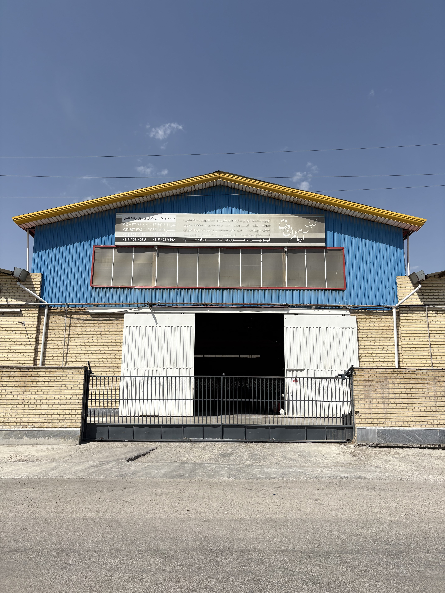

gallery auto switch
<style>
    .gallery-container {
        width: 300px;
        /* Adjust as needed */
        overflow: hidden;
        position: relative;
    }

    .gallery {
        display: flex;
        transition: transform 0.5s ease-in-out;
        white-space: nowrap;
        /* Prevent line breaks */
    }

    .gallery img {
        width: 100%;
        flex-shrink: 0;
        /* Prevent images from shrinking */
    }
</style>

<div class="gallery-container">
    <div class="gallery">
        
        
        
    </div>
    <section class="change_image">
        <h1>Arta Omran Varaq</h1>
    </section>
</div>

<script>
    const gallery = document.querySelector('.gallery');
    const images = document.querySelectorAll('.gallery img');
    let currentIndex = 0;
    const imageWidth = images[0].offsetWidth;
    const totalImages = images.length;

    function slideGallery() {
        currentIndex++;
        if (currentIndex >= totalImages) {
            currentIndex = 0; // Reset to the beginning
        }
        const translateX = -currentIndex * imageWidth;
        gallery.style.transform = `translateX(${translateX}px)`;
    }

    // Start the animation loop
    setInterval(slideGallery, 2000); // Adjust interval as needed
</script>